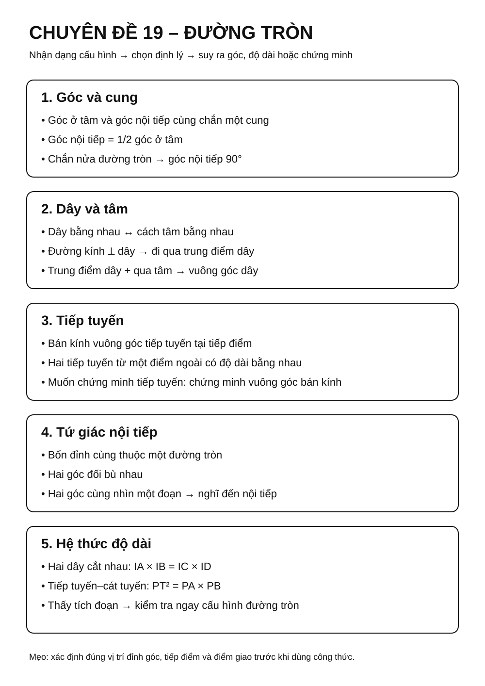
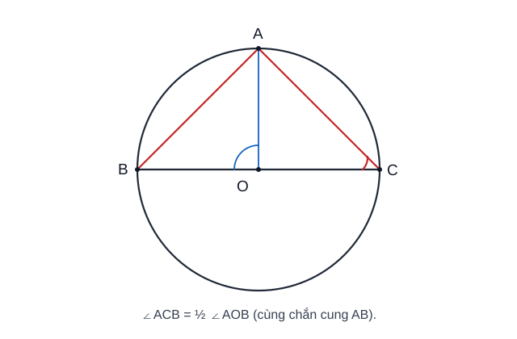
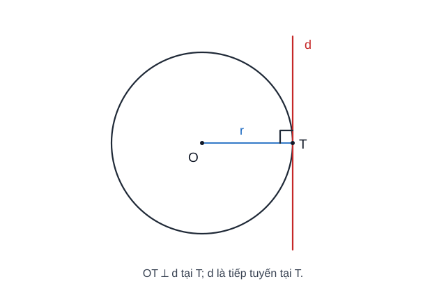
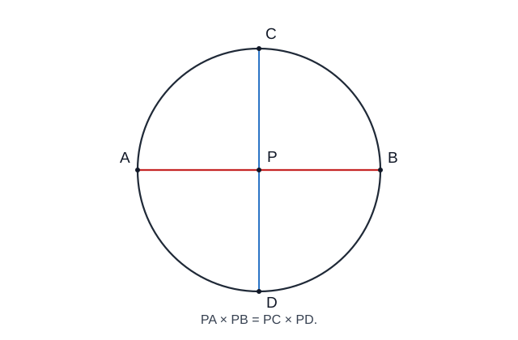
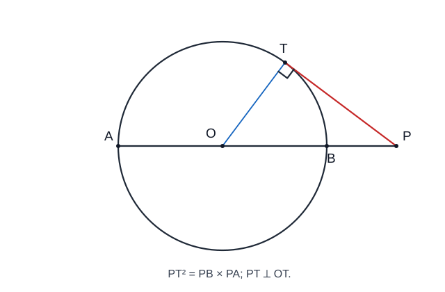
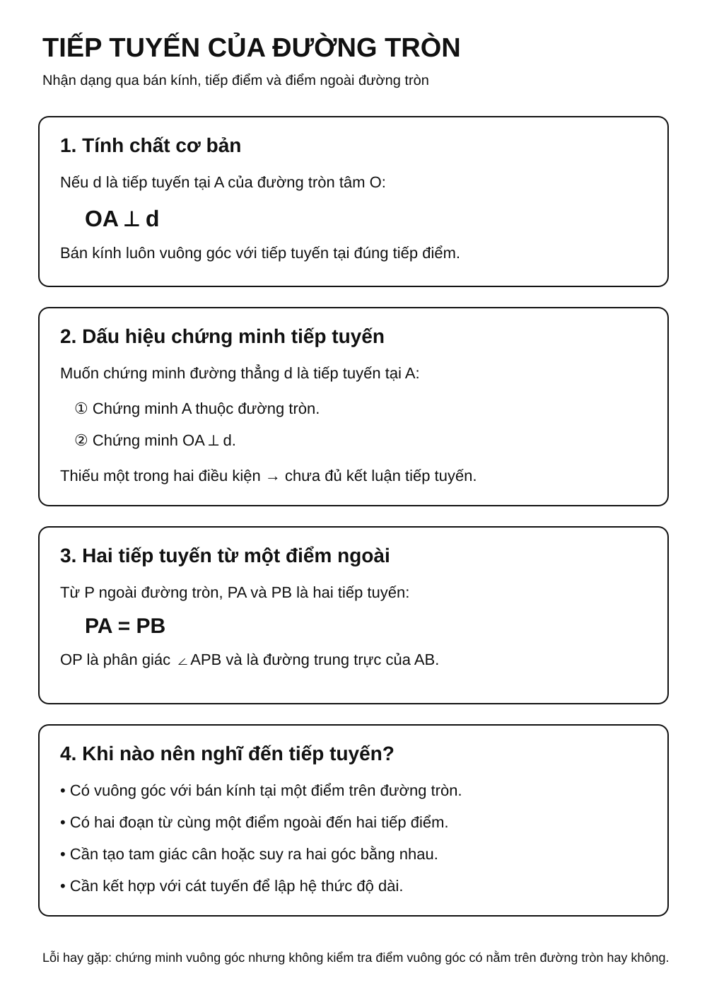
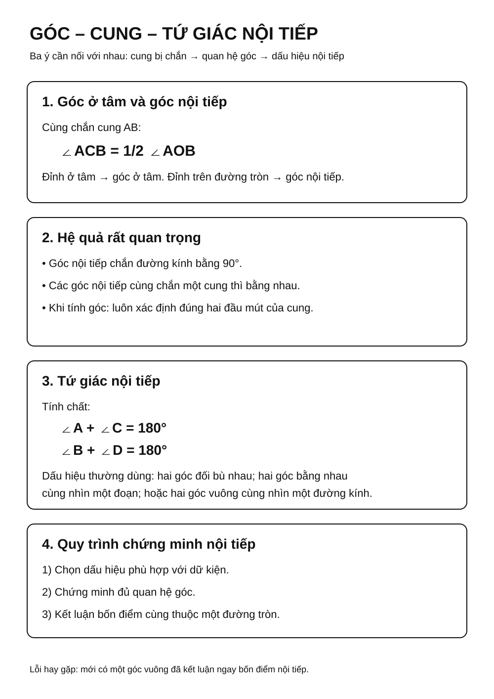
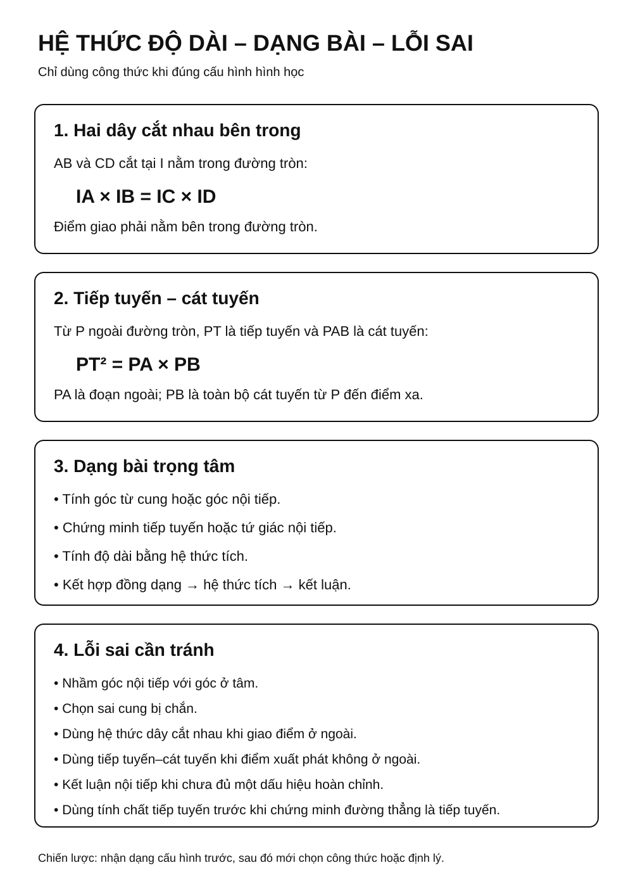

Chuyên đề 19 – Đường tròn
Trạng thái: Đã kiểm định nội dung học thuật; cấu trúc Roadmap chuẩn 11 mục.
Lớp trọng tâm: 9 Mạch kiến thức: Hình học Mức ưu tiên: ⭐⭐⭐⭐⭐
🧭 1. Bản đồ kiến thức
ĐƯỜNG TRÒN
│
├── Góc và cung
│ ├── Góc ở tâm
│ ├── Góc nội tiếp
│ └── Góc nội tiếp chắn nửa đường tròn = 90°
│
├── Dây và khoảng cách đến tâm
│ ├── Dây bằng nhau ↔ cách tâm bằng nhau
│ └── Đường kính vuông góc dây → đi qua trung điểm dây
│
├── Tiếp tuyến
│ ├── Bán kính ⟂ tiếp tuyến tại tiếp điểm
│ └── Hai tiếp tuyến từ một điểm ngoài bằng nhau
│
├── Tứ giác nội tiếp
│ └── Tổng hai góc đối = 180°
│
└── Hệ thức độ dài
├── Hai dây cắt nhau
└── Tiếp tuyến – cát tuyến
Mạch tư duy trọng tâm:
nhận dạng cấu hình đường tròn → xác định cung/góc/tiếp tuyến → chọn định lý phù hợp → suy ra góc, độ dài hoặc chứng minh hình học.
Infographic – Tổng quan chuyên đề

Minh họa trực quan
1. Góc ở tâm và góc nội tiếp

Trong cùng một đường tròn, góc nội tiếp chắn một cung bằng nửa góc ở tâm cùng chắn cung đó.
Nếu góc ở tâm là ∠AOB và góc nội tiếp là ∠ACB, cùng chắn cung AB, thì:
∠ACB = 1/2 ∠AOB
Đây là một trong những tính chất quan trọng nhất của chương đường tròn.
2. Tiếp tuyến và bán kính

Tiếp tuyến của đường tròn vuông góc với bán kính tại tiếp điểm.
Nếu đường thẳng d là tiếp tuyến của đường tròn tâm O tại điểm A, thì:
OA ⟂ d
Dấu hiệu đảo cũng rất hay dùng:
Nếu một đường thẳng vuông góc với bán kính tại một điểm thuộc đường tròn, thì đường thẳng đó là tiếp tuyến của đường tròn.
3. Hai dây cắt nhau trong đường tròn

Nếu hai dây
ABvàCDcắt nhau tạiIbên trong đường tròn, thì tích hai đoạn của dây này bằng tích hai đoạn của dây kia.
Ta có hệ thức:
IA × IB = IC × ID
Dạng bài này thường xuất hiện khi đề cho nhiều đoạn thẳng trong cùng một đường tròn và hỏi một độ dài chưa biết.
4. Tiếp tuyến – cát tuyến

Nếu từ một điểm
Pở ngoài đường tròn kẻ một tiếp tuyếnPTvà một cát tuyến cắt đường tròn tạiA,B, thì:
PT² = PA × PB
Đây là hệ thức rất quan trọng trong bài toán độ dài liên quan đến tiếp tuyến.
Bảng công thức trọng tâm
| Dạng kiến thức | Hệ thức / tính chất cần nhớ |
|---|---|
| Góc ở tâm – góc nội tiếp | góc nội tiếp = 1/2 góc ở tâm |
| Tiếp tuyến – bán kính | bán kính ⟂ tiếp tuyến tại tiếp điểm |
| Hai dây cắt nhau | IA × IB = IC × ID |
| Tiếp tuyến – cát tuyến | PT² = PA × PB |
Dấu hiệu nhận biết nhanh trong bài
- Thấy góc trong đường tròn → nghĩ đến góc nội tiếp, góc ở tâm, cung bị chắn.
- Thấy vuông góc với bán kính tại tiếp điểm → nghĩ đến tiếp tuyến.
- Thấy hai dây cắt nhau → nghĩ đến tích các đoạn.
- Thấy điểm ở ngoài đường tròn có tiếp tuyến và cát tuyến → nghĩ đến
PT² = PA × PB.
Mẹo giải bài
- Luôn vẽ rõ tâm
O, tiếp điểm và các giao điểm. - Khi tính góc, xác định chính xác cung bị chắn.
- Khi thấy nhiều tích đoạn thẳng, thử kiểm tra xem có cấu hình dây cắt nhau hoặc tiếp tuyến–cát tuyến hay không.
- Với bài chứng minh tiếp tuyến, thường cần chứng minh một góc vuông với bán kính.
🎯 2. Mục tiêu cần đạt
Sau khi hoàn thành chuyên đề, học sinh cần:
- [ ] Phân biệt được góc ở tâm, góc nội tiếp và cung bị chắn.
- [ ] Vận dụng được góc nội tiếp, góc tạo bởi tiếp tuyến và dây cung, cùng quan hệ với cung bị chắn.
- [ ] Nhận biết và chứng minh được tiếp tuyến.
- [ ] Sử dụng được tính chất hai tiếp tuyến xuất phát từ một điểm ngoài.
- [ ] Nhận biết và chứng minh được tứ giác nội tiếp.
- [ ] Dùng được hệ thức hai dây cắt nhau, tiếp tuyến – cát tuyến và các công thức độ dài cung, diện tích quạt/vành khuyên.
- [ ] Kết hợp được đường tròn với tam giác đồng dạng và hệ thức lượng.
📖 3. Kiến thức cốt lõi
3.0. KNTT Core bổ sung: cung, vị trí tương đối và đo lường đường tròn
- Cung và dây: trong cùng một đường tròn, hai dây bằng nhau chắn hai cung nhỏ bằng nhau và ngược lại.
- Độ dài cung: \(l=\frac{n}{360}\cdot2\pi R\).
- Diện tích quạt tròn: \(S=\frac{n}{360}\pi R^2\).
- Vành khuyên: \(S=\pi(R^2-r^2)\), với \(R>r\).
- Đường thẳng và đường tròn: so sánh khoảng cách từ tâm đến đường thẳng với bán kính \(R\): nhỏ hơn → 2 giao điểm; bằng → tiếp tuyến; lớn hơn → không giao.
- Hai đường tròn: so sánh khoảng cách hai tâm \(d\) với \(R+r\) và \(|R-r|\) để xác định cắt nhau, tiếp xúc hoặc không giao.
- Ngoại tiếp tam giác: tâm là giao các đường trung trực. Nội tiếp tam giác: tâm là giao các đường phân giác.
- Đa giác đều: có các cạnh bằng nhau và các góc bằng nhau.
3.1. Góc ở tâm và góc nội tiếp
Nếu ∠AOB là góc ở tâm và ∠ACB là góc nội tiếp cùng chắn cung AB, thì:
∠ACB = 1/2 ∠AOB
Hệ quả rất quan trọng:
Góc nội tiếp chắn nửa đường tròn bằng
90°.
3.2. Quan hệ giữa dây và tâm
Trong một đường tròn:
- hai dây bằng nhau thì cách tâm bằng nhau;
- hai dây cách tâm bằng nhau thì bằng nhau;
- đường kính vuông góc với một dây thì đi qua trung điểm của dây đó;
- đường kính đi qua trung điểm của một dây không đi qua tâm thì vuông góc với dây đó.
3.3. Tiếp tuyến
Nếu d là tiếp tuyến tại A của đường tròn tâm O thì:
OA ⟂ d
Dấu hiệu nhận biết:
Một đường thẳng đi qua điểm
Athuộc đường tròn và vuông góc với bán kínhOAthì là tiếp tuyến tạiA.
Nếu từ điểm P ngoài đường tròn kẻ hai tiếp tuyến PA, PB tại A, B, thì:
PA = PB
Ngoài ra, OP là đường trung trực của AB và là phân giác của ∠APB. Đây là các tính chất rất hữu ích khi khai thác cấu hình hai tiếp tuyến.
3.3A. Góc tạo bởi tiếp tuyến và dây cung
Góc tạo bởi tiếp tuyến tại A và dây AB có số đo bằng một nửa số đo cung bị chắn AB. Vì vậy nó bằng góc nội tiếp cùng chắn cung AB.
Đây là cầu nối rất quan trọng:
tiếp tuyến + dây cung → góc bằng góc nội tiếp → đồng dạng / nội tiếp
Khi áp dụng phải xác định đúng cung nằm trong góc đang xét; không chỉ nhìn hai đầu mút của dây rồi chọn tùy ý cung lớn hay cung nhỏ.
Infographic – Tiếp tuyến

3.4. Tứ giác nội tiếp
Một tứ giác nội tiếp là tứ giác có bốn đỉnh cùng thuộc một đường tròn.
Tính chất quan trọng:
∠A + ∠C = 180°
∠B + ∠D = 180°
Một số dấu hiệu thường dùng để chứng minh tứ giác nội tiếp:
- tổng hai góc đối bằng
180°; - nếu hai điểm
C,Dnằm cùng phía đối với đường thẳngABvà∠ACB = ∠ADB, thì bốn điểmA, B, C, Dcùng thuộc một đường tròn; - nếu
∠AMB = ∠ANB = 90°thìA, M, B, Ncùng thuộc đường tròn có đường kínhAB.
Infographic – Góc, cung và tứ giác nội tiếp

3.5. Hai dây cắt nhau
Nếu hai dây AB, CD cắt nhau tại I bên trong đường tròn:
IA × IB = IC × ID
3.6. Tiếp tuyến – cát tuyến
Từ điểm P ngoài đường tròn, tiếp tuyến PT và cát tuyến PAB cho:
PT² = PA × PB
3.6A. Độ dài cung, diện tích hình quạt và hình vành khuyên
Với đường tròn bán kính R, cung có số đo n°:
l = n/360 · 2πR = nπR/180
Diện tích hình quạt tương ứng:
S_quạt = n/360 · πR²
Nếu biết độ dài cung l thì cũng có:
S_quạt = lR/2
Với hình vành khuyên tạo bởi hai đường tròn đồng tâm bán kính R > r:
S_vành = π(R² - r²)
Cả độ dài cung và diện tích hình quạt đều tỉ lệ với số đo cung
n°; đây là cách kiểm tra nhanh tính hợp lý của kết quả.
3.7. Bảng chọn công cụ
| Dấu hiệu | Nên nghĩ tới |
|---|---|
| Góc có đỉnh trên đường tròn | Góc nội tiếp |
| Góc có đỉnh tại tâm | Góc ở tâm |
| Cần chứng minh tiếp tuyến | Bán kính vuông góc |
| Hai tiếp tuyến từ một điểm | Hai đoạn tiếp tuyến bằng nhau |
| Bốn điểm cần chứng minh cùng thuộc một đường tròn | Tứ giác nội tiếp |
| Hai dây cắt nhau | Tích các đoạn dây |
| Tiếp tuyến + cát tuyến | PT² = PA × PB |
🔗 4. Kiến thức liên quan
- Kiến thức nên ôn trước: 14 – Tam giác, 17 – Thales và đồng dạng, 18 – Hệ thức lượng
- Liên hệ mạnh: vuông góc, đồng dạng, góc, tam giác vuông.
- Chuyên đề sử dụng tiếp: 20 – Hình học tổng hợp, 25 – Tổng hợp ôn thi vào 10
🧩 5. Các dạng bài cần nắm vững
Infographic – Hệ thức độ dài và lỗi sai

Dạng 1. Tính góc trong đường tròn
Dùng quan hệ góc ở tâm – góc nội tiếp và các góc cùng chắn một cung.
Dạng 2. Chứng minh tiếp tuyến
Chứng minh bán kính vuông góc với đường thẳng tại điểm thuộc đường tròn.
Dạng 3. Hai tiếp tuyến từ một điểm ngoài
Dùng PA = PB và khai thác tam giác cân hoặc đối xứng.
Dạng 4. Chứng minh tứ giác nội tiếp
Ưu tiên các dấu hiệu:
- tổng hai góc đối bằng 180°;
- hai góc bằng nhau cùng nhìn một đoạn thẳng, với hai đỉnh góc nằm cùng phía đối với đường thẳng chứa đoạn đó;
- hai góc vuông cùng nhìn một đoạn thẳng, từ đó nhận ra đường tròn có đường kính là đoạn ấy.
Dạng 5. Tính độ dài bằng hai dây cắt nhau
Dùng:
IA × IB = IC × ID
Dạng 6. Tính độ dài bằng tiếp tuyến – cát tuyến
Dùng:
PT² = PA × PB
Dạng 7. Độ dài cung, diện tích quạt tròn và vành khuyên
Xác định đúng bán kính và số đo cung trước khi dùng l = nπR/180, S_quạt = nπR²/360; với vành khuyên dùng hiệu diện tích hai hình tròn đồng tâm.
Dạng 8. Bài tổng hợp đường tròn
Kết hợp tiếp tuyến, nội tiếp, đồng dạng, hệ thức tích, lượng giác và đo lường đường tròn.
🚀 6. Dạng bài thi vào lớp 10
Trong Roadmap ôn thi vào lớp 10, đây là chuyên đề có mức ưu tiên rất cao.
Các kỹ năng cần chắc: 1. Chứng minh tứ giác nội tiếp. 2. Chứng minh tiếp tuyến. 3. Chứng minh hai tam giác đồng dạng trong cấu hình đường tròn. 4. Chứng minh hệ thức tích đoạn thẳng. 5. Tính góc, độ dài hoặc bán kính. 6. Kết hợp nhiều bước để giải bài hình tổng hợp.
Mức ưu tiên ôn thi: ⭐⭐⭐⭐⭐.
⚠️ 7. Lỗi sai thường gặp
| Lỗi sai | Cách tránh |
|---|---|
| Nhầm góc nội tiếp với góc ở tâm | Kiểm tra vị trí đỉnh của góc |
| Không xác định đúng cung bị chắn | Đánh dấu hai đầu mút cung trước |
| Chứng minh tiếp tuyến nhưng quên điểm thuộc đường tròn | Cần đủ: điểm trên đường tròn + vuông góc bán kính |
| Dùng sai định lý hai dây cắt nhau | Điểm giao phải nằm bên trong đường tròn |
| Dùng sai tiếp tuyến – cát tuyến | Điểm xuất phát phải ở ngoài đường tròn |
| Kết luận nội tiếp khi mới có một góc vuông | Một góc vuông chỉ cho biết một điểm nằm trên đường tròn có đường kính xác định; cần thêm điều kiện cho điểm còn lại hoặc dùng một dấu hiệu nội tiếp đầy đủ |
📝 8. Luyện tập
Phần luyện tập chính đã chuyển sang Practice Room để tách rõ KNTT Core với Entrance10/Challenge và ghi learner evidence theo skill.
✅ 9. Tự kiểm tra
Sau khi luyện, làm Core Readiness Check. Kết quả là soft mastery: dùng để gợi ý ôn lại, không khóa lộ trình.
🔄 10. Liên kết Roadmap
- ← Trước: 14 – Tam giác, 17 – Thales và đồng dạng, 18 – Hệ thức lượng
- → Tiếp theo: 20 – Hình học tổng hợp
-
→ Liên hệ: 25 – Tổng hợp ôn thi vào 10
-
✏️ Luyện tập: Bài tập Chuyên đề 19
- ✅ Tự kiểm tra: Tự kiểm tra Chuyên đề 19
Xem toàn bộ hệ thống tại Blueprint 25 chuyên đề.
🏁 11. Điều kiện hoàn thành
- [ ] Đã học đủ 5 chặng KNTT Core ở đầu trang.
- [ ] Đã luyện Practice Room và chữa lại các câu sai.
- [ ] Đã làm Core Readiness Check; khoảng 80% trở lên là tín hiệu sẵn sàng.
- [ ] Không suy dữ kiện từ hình vẽ; công thức đo lường dùng đúng đại lượng và đơn vị.
Soft Mastery
Kết quả không khóa chuyên đề tiếp theo; evidence yếu chỉ tạo gợi ý ôn đúng skill.